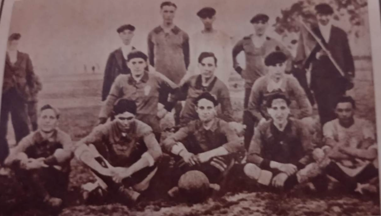
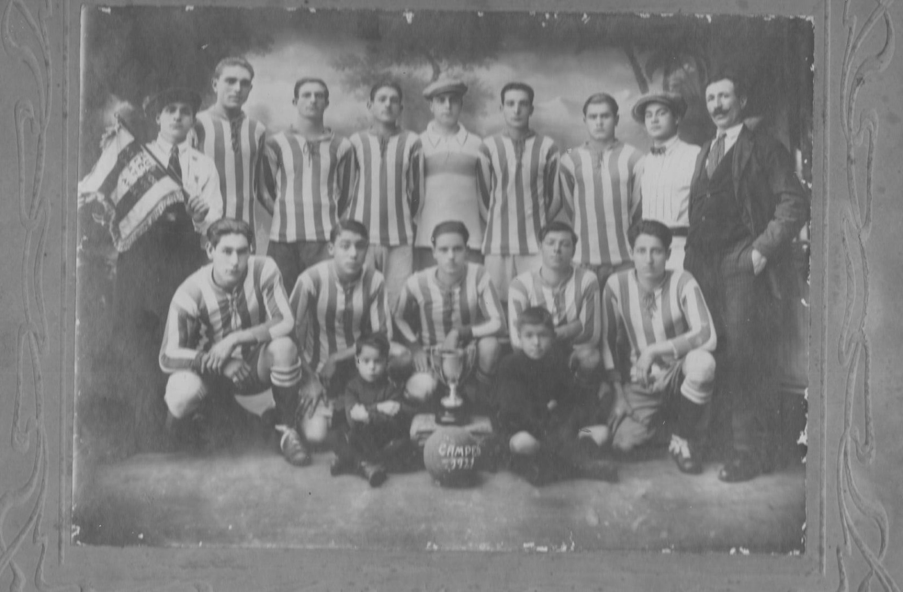
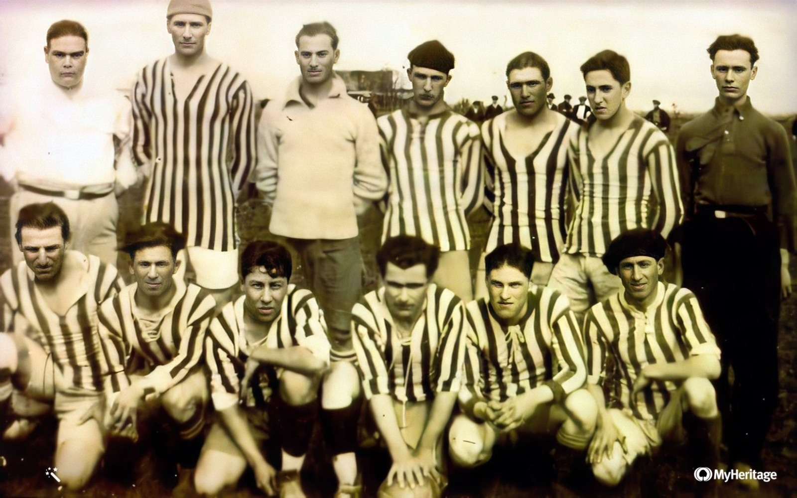

Los Andes nació en un lugar por donde miles y miles pasamos todos los días. Pegado a la estación de Lomas, sobre Gorriti, en un baldío. José Gogenola, Eduardo Gallardón, Diego Urioste, E. Adolfo Langet, Federico Galán, Antonio Talgiani, Amoroso, José Piaggio, Aboitiz, Crespo, Marcos Panizzi: ahí está la lista (seguramente incompleta) de los apellidos y los nombres de los chicos que se juntaban a jugar a la pelota y a lo mejor soñaban que ellos mismos iban a ser el comienzo de la leyenda de sus vidas. Y también de las nuestras.
Voluntad les sobraba: decidieron formar un club que, por supuesto, tenía que tener un nombre.
¿Cómo elegirlo?
En aquella primera parte del siglo XX, mientras se aceleraba la popularidad del fútbol, los grandes ídolos deportivos eran los héroes del cielo, con sus hazañas acompañadas por multitudes. Jorge Newbery fue el número uno, pero había otros. 1916 fue el año de una de esas grandes proezas aéreas. El capitán Angel María Zuloaga y el piloto Eduardo Bradley cruzaron por primera vez cuzar la cordillera en un globo. Dos valientes que arriesgaron su vida para volar a 8100 metros de altura resistiendo una temperatura de 32 grados bajo cero merecían un homenaje eterno. A más de 1000 kilómetros, un grupo de adolescentes hizo justicia.
Y sí: tranquilamente pudimos llamarnos “Eduardo Newbery” (el nombre del globo) o, por qué no, “Zuloaga y Bradley”. Más de 100 años despúes ya estaríamos acostumbrados. Pero primó la síntesis y por iniciativa de Loizú, uno de los fundadores, el obstáculo, la gran cadena montañosa como un reto para los audaces, nos regaló el nombre: Los Andes.
Primeros pasos
El primer paso estaba dado y había que nombrar autoridades. E. Adolfo Langet, elegido el primer presidente, ocupó el cargo apenas 22 días, antes de renunciar por razones laborales y estudiantiles. Su vida terminó en un accidente en el que también murió Marcos Panizzi. El único sobreviviente fue quien escribiría con sus sueños y acciones la historia defintiva de Los Andes: Eduardo Gallardón.
Una genialidad de Gallardón fue publicar la revista “Nuevas Ideas”, que tenía la tirada de un ejemplar, que se “alquilaba” para que pasara de mano en mano. Una de las primeras notas resalta el primer triunfo de nuestra historia, frente a un equipo llamado "Adelante Yrigoyen". 1916 fue un año de quiebre en el país, con la llegada al poder del primer presidente que ganó una elecciones democráticas en serio. En la cancha, los militantes del “Peludo” no pudieron contra nuestros bravos muchachos, que les ganaron 3 a 0.
La historia cuenta que el primer partido más o menos formal lo jugamos contra un equipo de nombre un poco intimidante: "Fomentos Peligrosos". Esa vez, tocó perder.
Nos llamábamos Los Andes Foot-ball club y llevábamos varios meses de vida cuando llegó la fundación formal, el primer día de enero de 1917.

Nota gráfica de valor histórico. Es el primer equipo de Los Andes de 1917. De pie, de izquierda a derecha: Julio Regazzi, García, Alfredo Novi, Diego Arioste, Antonio Piaggio y el "Negro Tio Galera", mascota del conjunto. Hincados: Néstor de la Peña, Marcos Panizzi y Julio Ricagno. En primera fila: Carlos Tittonel, Antonio Tagliani, Juan Benci, Eduardo Gallardón y Amadeo Bucci
Primeros colores
Ni las milrayitas ni el rojo y blanco que tenemos adherido al cuerpo como un tatuaje. Inspirada en los colores de Racing, nuestra primera camiseta fue celeste, con una banda blanca horizontal. En 1922 llegó la casaca que nos dio el apodo eterno. Fue una idea de Eduardo Gallardón, que tomó el diseño de Sportivo Barracas, y eligió el rojo para diferenciarla de las camisetas de los vecinos Temperley y Banfield.

Equipo correspondiente al año 1921, es la segunda foto más antigua que se tiene del club, cuando aún no estaba afiliado a la Aso, Arg. De Football. Aquí participaba del torneo organizado por la Fed.Dep. de la Pcia. de Bs.As.

Equipo de 1922 que por su privilegiada posición en la Zona Sud de Segunda de la Aso. Arg. de Football logra el ascenso a Intermedia. De izquierda a derecha, arriba Alfredo Novi, Juan Tamagno, Ursino Fernández, Antonio Piaggio y Alberto Gallardón. Abajo Antonio Giana, José Tito, Héctor Pucheu, Oscar Rodríguez, Almanzor Elías Spink y Savino Tito.
Las sedes sociales
Las primeras reuniones de los jóvenes dirigentes fueron en el sótano de la lechería Gallardón, en Meeks 24. Después alquilaron el local de Laprida 501, donde funcionó la primera sede social. Estuvimos hasta 1939, cuando nos mudamos a Carlos Pellegrini 66, donde nos quedamos hasta 1948. En ese lugar llegó una etapa de esplendor social, con los grandes bailes como actividad principal.
La siguiente mudanza fue a la sede actual, en Hipólito Yrigoyen 9549. En un sitio que en aquel momento era una quinta con una gran arboleda, siguió la fiesta con las veladas animadas por grandes figuras y las mejores orquestas.
Con la sede entró a la historia grande de Los Andes la familia Agosti. Los hermanos le vendieron el terreno al club por un precio debajo del valor de mercado. Y terminaron donando la deuda que mantenía el club con ellos. En homenaje a aquel gesto, hoy el microestadio de la sede lleva el nombre de Santiago Agosti, el padre de los hermanos.
Pese a construcciones espectaculares como la pileta olímpica o la desaparecida cancha de pelota a paleta, la sede se mantuvo como una obra inconclusa durante décadas. Ya en el siglo XXI fue centro de una gran gesta de las socias y los socios de Los Andes. Entregada a una concesión que la iba a mantener en manos ajenas hasta 2047, la sede fue recuperada luego de meses y meses de movilización. Desde 2012, el 23 de mayo, el día de la recuperación formal, es el “Día mundial de los hinchas y las hinchas de Los Andes”
Las canchas
El primer terreno formal para la práctica del fútbol quedaba en la manzana de las calles Lamadrid, Pedernera, Viamonte y Pueyrredón, en Lomas Este. Todo eso era un inmenso baldío y los muchachos levantaron como vestuario una casilla precaria con las maderas de los embalajes de los autos marca Buick. El terreno era alquilado con el dinero de los propios jugadores, con algunos préstamos y con lo que juntaban con rifas y kermeses.
En 1922, Los Andes se mudó a Matheu y Arenales. Ahí llevaron la casilla. "Teníamos alma de nómades. Por supuesto, que por las circunstancias. Si ahora es difícil, no le digo de las dificultades de antes. La diferencia estaba en que no sé si por el tiempo o por las condiciones de vida, había mucho amor; afiebrado amor por lo que se hacía”, dijo Eduardo Gallardón años después.
En 1925 la cancha se situó en el campo de "El Aguila", en la manzana de Díaz Vélez, Olazábal, Gorriti, y Loria. Si vivís ahí, quizá donde tenés la cocina estaba uno de los puntos del penal, o abajo de tu cama pateaban los corners.
De a poco nos fuimos acercando el destino final. La anteúltima cancha de Los Andes estuvo en un lugar donde hoy todos los días se junta un gentío. El 26 de abril de 1931 fue inaugurado el nuevo campo de deportes en Laprida al 1200, en la actual Plaza Libertad. Para la época era un estadio coqueto con palcos de madera y vestuarios. El principal material utilizado para la construcción fue, una vez más, la madera de las cajas utilizadas para embalar automóviles, que según Eduardo Gallardón, era fuerte, noble y barata. La manzana fue alquilada a nombre de Eduardo Gallardón y Juan Da Grazia porque el club no tenía personería jurídica.
La inauguración fue con una gran fiesta. Suelta de palomas, carreras pedestres de 100, 1000 y 4000 metros y postas de 4 por 100. También hubo un partido de básquet entre Los Andes y Lomas Alumni. La fiesta se cerró con dos partidos amistosos de fútbol contra Nacional de Adrogué. En el principal Los Andes se impuso por 1 a 0, con un gol convertido por Villén.
Y llegó el estadio actual, habilitado oficialmente el sábado 28 de septiembre de 1940, con un triunfo ante Temperley. Tenía una tribuna de cemento de 16 escalones, a la que después le agregaron en la parte central otros 16, para colocar las plateas. Con el ascenso de 1960 se construyó la colosal tribuna Horacio Palacios, una de las más grandes de los estadios argentinos.
En 1980, el estadio fue bautizado con el nombre de Eduardo Gallardón. En 2017 sumó su tribuna cabecera. Con una capacidad para más de 35.000 personas, es el estadio más grande del distrito de Lomas de Zamora.
El fútbol, la pasión
Los Andes se afilió el 22 de febrero de 1922 a la Asociación Argentina de Football, que al fusionarse con la Asociación Amateur en 1926 conformó la Asociación del Fútbol Argentino. Ese mismo año ascendió a Intermedia.
El inicio de la era profesional, en 1931, nos encontró en la tercera división. En 1938, volvimos a la segunda con un equipo que hizo una campaña irrepetible: ganó 14 de los 15 partidos. Ese año tuvo origen la leyenda de un apellido: la gran figura fue Manuel Da Graca, para muchos el primer ídolo de la historia de Los Andes.
En 1957 gritamos otra vez campeones, con el título de la segunda división de ascenso. La figura y goleador, Ángel del Moro, otro ídolo inmortal.
Tres años después Los Andes llegó a la cima, como les gustaba jugar con el nombre a los periodistas. León Goldbaum, Ramón Salas, Héctor Abril, José Giaimo, Rodolfo Romero, Osvaldo Diez, Dardo Migoni, Ángel Reynoso, José Urben Farías, Miguel Baiocco, Héctor Pedutto y Norberto Figueroa fueron los nombres principales del primer ascenso a Primera División. La campaña se coronó con un triunfo en la cancha de Talleres de Escalada y la caranava hasta Lomas y la fiesta frente a la sede fueron extraordinarias.
Duramos sólo un año, pero en esa misma década volvimos a Primera. Fue en 1967 y la vía el viejo torneo reclasificatorio entre equipos de la A y la B. En ese equipo se destacó el segundo Da Graca de la historia, Abel, uno de los jugadores más exquisitos y de mayor nivel que pasó por el club. Para algunos, el mejor de todos.
El primer año en esta segunda etapa en Primera División fue el más importante en la historia futbolística del club. Con figuras tremendas como el propio Da Graca, Alfredo Obberti, Aldo Vilagra y Jorge Ginarte, el milrayitas logró algunos triunfos rutilantes, como un 3 a 1 contra River en el Monumental. Por su buena campaña clasificó para el torneo Nacional.
Fueron nuestros “años de oro”. Nos mantuvimos en Primera hasta 1971 y a partir de entonces empezó un largo período en la vieja Primera B. Estuvimos cerca de volver en 1977, en los tiempos de otro ídolo máximo, Juan Carlos “El Nene” Díaz. También en 1983, con el equipazo de Pedro Marchetta, con jugadores destacados como José Tiburcio Serrizuela, Luis Escobedo, Sergio Saturno y el “Colo” Cuellos.
Otra vez estuvimos “ahí” en 1986, ya en el Nacional B, con el lujoso equipo de los pibes rosarinos. El primer ascenso para una generación (o más de una) fue desde la tercera categoría, en 1994. Festejamos a lo grande aquel día de julio en la cancha de Lanús, cuando definimos la final con Deportivo Armenio. Como si hubiera estado escrita por un guionista, la historia anotó al tercer Da Graca, Hernán, que metió el gol de Los Andes en los primeros segundos del partido.
En ese equipo estaban Gabriel Lobos y Orlando Romero, “Romerito”, el último ídolo unánime del club. Los dos iban a estar otra vez en la vuelta a Primera, en la campaña soñada e inolvidable de 1999/2000. Con el “Gordo” Ginarte en el banco, los goles de otro “Gordo”, Ferrer, y un equipo casi imbatible, el corazón nos explotó con el gol de Fabio Pieters y el éxtasis en la cancha de Quilmes fue absoluto.
“Los Andes ya estuvo en Primera/ Y un día tenía que volver”, cantábamos todo el día. La tercera experiencia tuvo un clímax en el debut, con el triunfazo ante Racing. Pero caímos en una racha negativa y aunque repuntamos en la segunda ronda, no pudimos mantenernos.
No volvimos (todavía) a Primera, pero en los años siguientes nos dimos algunos gustos. El ascenso de 2008, con el crack de Jonatan Tridente en su pico. El paso por la B Nacional fue efímero, pero volvimos en 2014, cuando fuimos campeones después de 54 años, con el equipo inspirado y contundente de Fabián Nardozza.